Galena
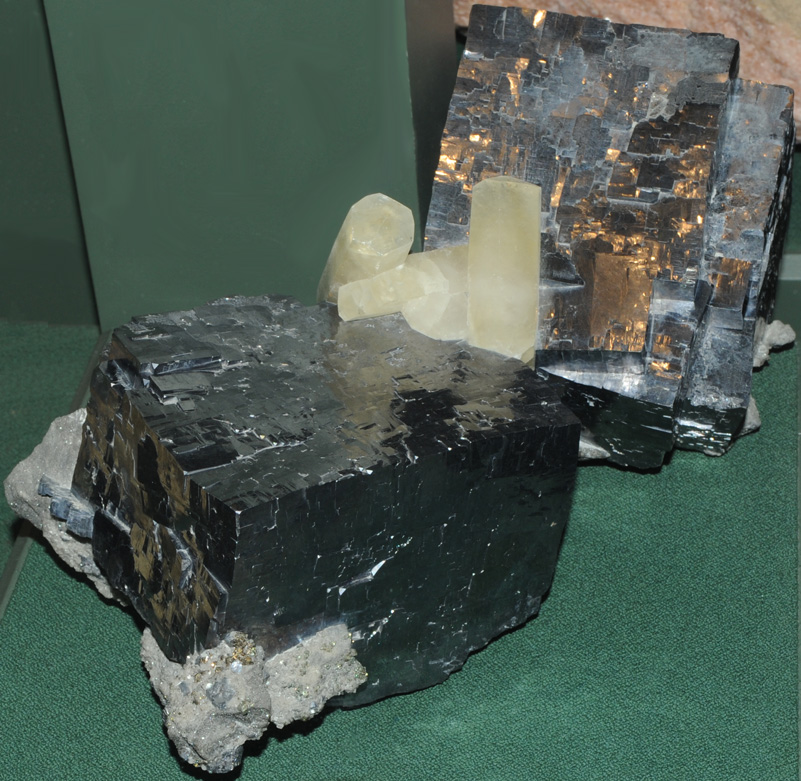
This is galena with calcite from Ozark Lead mine, St. Joseph Lead District, Missouri. The sample is about 30 cm across.
PbSA common mineral form of lead is galena, lead sulfide (PbS). In the sample shown below , the galena crystals are formed in a bed of quartz. The sample is about 4x4 cm and is from Neudorf, Germany.
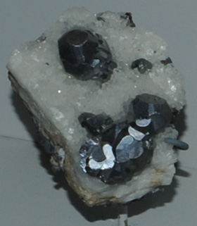The sample at right shows galena formed with siderite. The sample is about 8x8 cm and is also from Neudorf. | 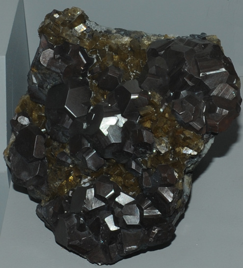
|
Galena is a noticeably dense mineral, having a density of about 7.6 gm/cm3. It has a metallic luster. Galena has the same cubic structure as common table salt, NaCl.
The samples pictured here are on display at the Smithsonian Museum of Natural History.
In the sample at right, the galena crystals are formed with sphalerite. The sample is about 9x6 cm and is from Mogul mine, Tipperary, Ireland. 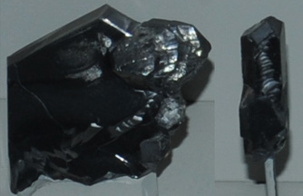These galena crystals are from Gonderbach mine, Laasphe, Nord Rhein-Westphalen, Germany. The sizes are about 3x5 cm and 1x3 cm.
|
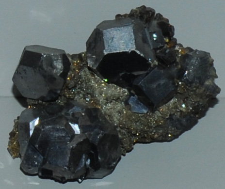
|
| 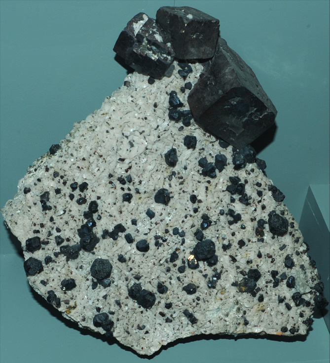 | This sample is about 20 cm high and is from Joplin, Missouri.
|
In the sample at right, the galena crystals are formed with sphalerite. The sample is about 9x6 cm and is from Mogul mine, Tipperary, Ireland. These galena crystals are from Gonderbach mine, Laasphe, Nord Rhein-Westphalen, Germany. The sizes are about 3x5 cm and 1x3 cm.
|
|
| 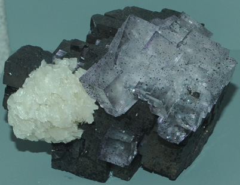
This is galena with fluorite and barite from Elmwood mine, Carthage, Tennessee. It is about 8 cm wide.
| 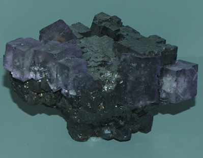 This is galena with fluorite from Elmwood mine, Carthage, Tennessee. It is about 10 cm wide.
|
| 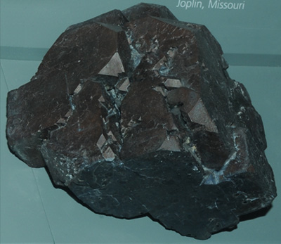 This is about an 8cm wide sample of galena from Joplin, Missouri. | 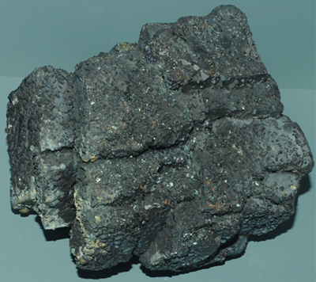 This is galena with sphalerite from Anna Beaver mine, Cardin, Oklahoma. The sample is about 10 cm across. |
| 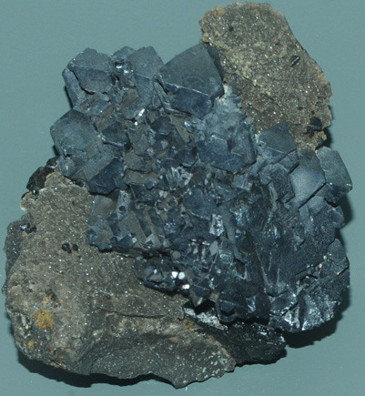This is galena with sphalerite from Harrisburg mine, Cardin, Oklahoma. It is about 8cm wide. 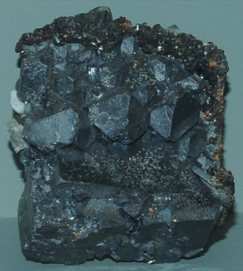This is galena with sphalerite from Vinegar Hill-Barr mine, Treece, Kansas. It is about 8cm wide. 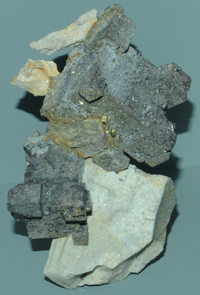This is galena from Scott mine, Hockerville, Oklahoma. It is about 8cm wide. 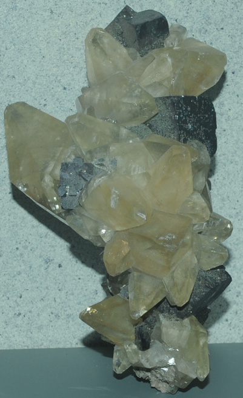 This is galena with calcite from Joplin, Missouri. It is about 20cm high. 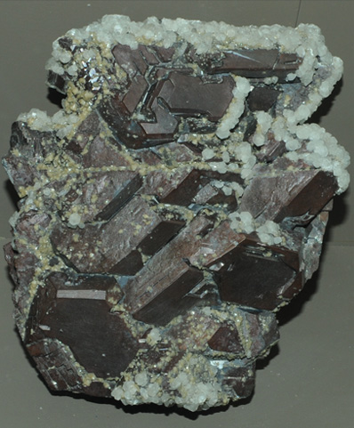This galena sample is from Cumbria, England. It is about 10 cm wide. | 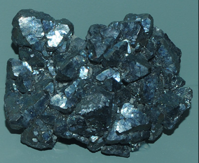 This is galena from St. J oseph lead district, Missouri. It is about 8cm wide. 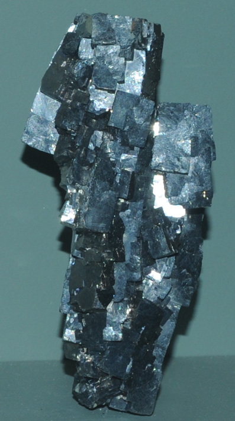This is galena from St. J oseph lead district, Missouri. It is about 5cm wide. 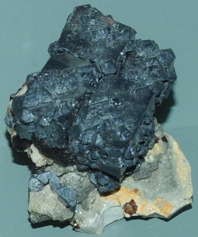This is galena with marcasitemarcasite and sphalerite from Joplin, Missouri. It is about 15cm high. 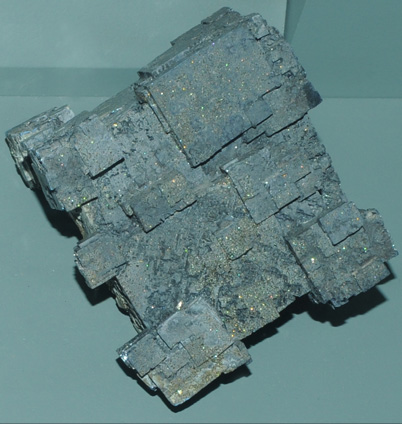This is galena from Scott mine, Hockerville, Oklahoma. It is about 8 cm wide. 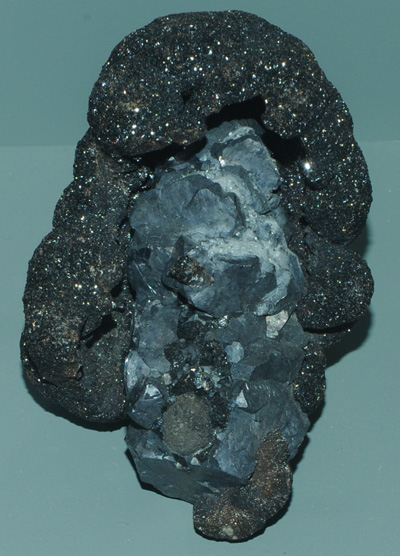This is galena with sphalerite from Picher, Oklahoma. It is about 8 cm wide. |
| 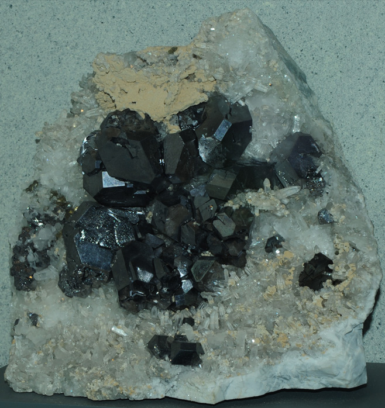 | This sample of galena represents a sequence of mineral growth. Changing growth conditions formed colorless quartz first followed by brassy chalcopyrite, silvery galena, the single black sphalerite crystal and tan calcite. |
Mindat: Galena
|
Index |